|
Ball-Eastway house, Glenorie, Austria 1983
Glenn Murcutt
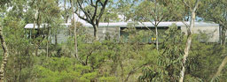
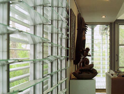
Houses of the Century
Anatxu Zabalbeascoa |
Glenn Murcutt follows the Modern Movement and
combines it with the Australian tradition and materials. For
the Ball-Eastway house he uses very simple forms and corrgated
steel seehting. The walls are able to regular the amount of fresh
air and light coming into the house (left pictures). On the picture
on the right the kitchen can be seen with a window in the roof
providing for daylight. Because the roof isn't flat, direct daylight
does't reach the right side-wall. |
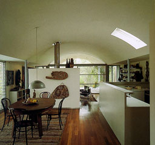 |
Evry Cathedral, Evry, France, 1992-1995
Mario Botta
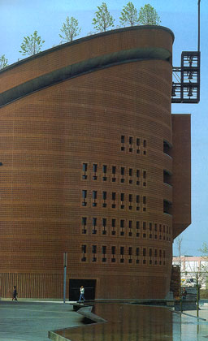
Contemporary European Architects; Volume IV
Taschen |
Influenced by Le Corbusier and Louis Kahn,
Botta created his own personal style of strong geometric designs.
The round structure of this cathedral is based on Byzantine-plan
churches. The main material of the building is brick. With the
ring of trees on top the church looks like a crown. On the second
photograph on the right the interior of a chapel belonging to
the church can be seen. An opening in the roof provides the altar
for daylight. Light and interior are symmetrically.
|
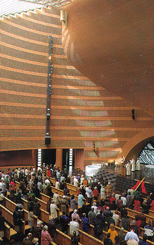
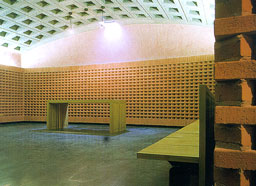 |
Vena-Mondt Studio, Los Angeles, 1983
Frederick Fisher
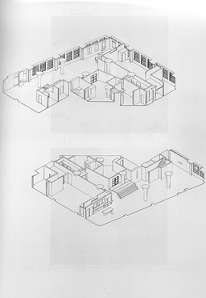
Frederick Fisher, ARCHITECT
Joseph Giovannini and Marie-Claude Beaud
1995 Rizzoli International Publications, Inc |
Daylight brushes past the wall. For more information
and another picture of this studio go to the examples belonging
to F0.
|
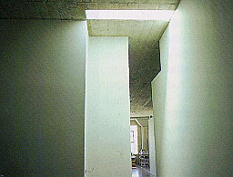 |
|
Chimenka-no-ya, Nakano, Tokyo, Japan, 1987-1988
Yutaka Saito and Associates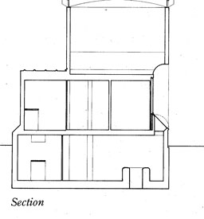GA Houses
A.D.A. EDITA Tokyo |
The plan of this house is very weird. Sometimes
you have to walk far to go to a room near by. Owing to this it
impossible to get any clear idea of the layout of the spaces.
A big window in the south-facade provides for most of the daylight
entering into the house. The window distributes the light over
three floors as can be seen on the left picture. The right photograph
shows the basement where the light is coming from above. The
contrast with the ceiling is enormous. Because of the light brushing
past the backwall the texture of the wall is easy to be seen. |
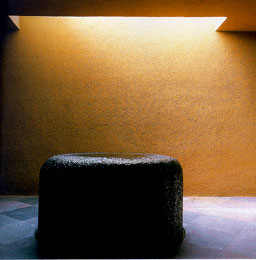 |
|
Molina House, Mexico City, Mexico, 1972-1973, Legorreta
Arquitectos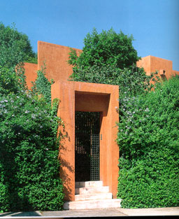GA Houses
A.D.A. EDITA Tokyo |
The essences of the Molina House are intimacy
and the atmosphere of the interior spaces. This has been achieved
by playing with natural light and variations in ceiling heights.
The construction consists of bearing brick walls, concrete slabs
and plaster finishing inside and outside. The structure on the
walls in the interior can be seen on the right photograph. Daylight
entering through a skylight into the room brushes past the structured
wall and lights up the dining table from above.
|
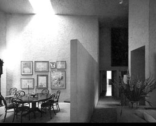 |
|
|
|
|
|
|
|
|